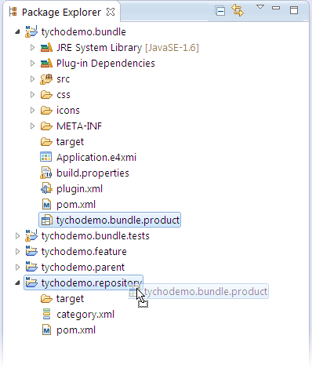
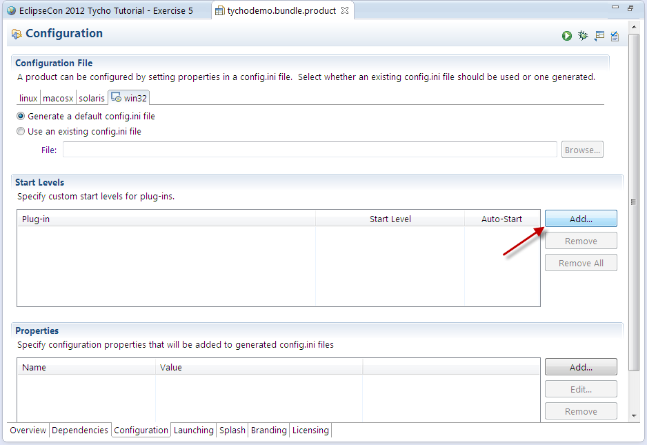
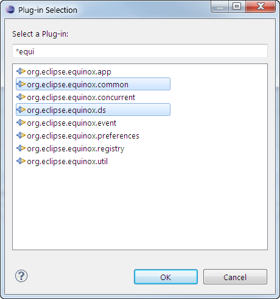
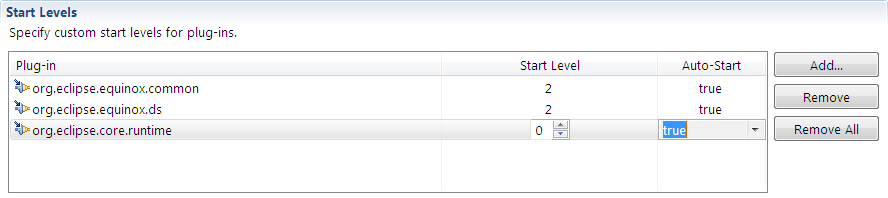
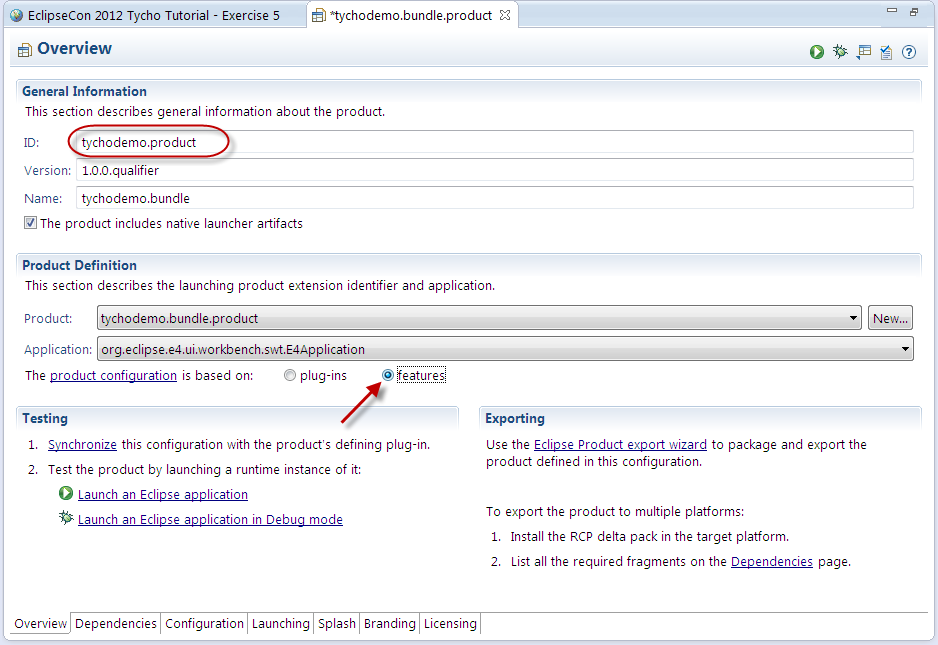
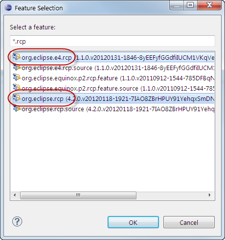
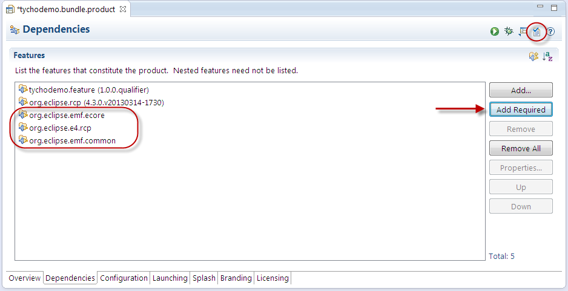
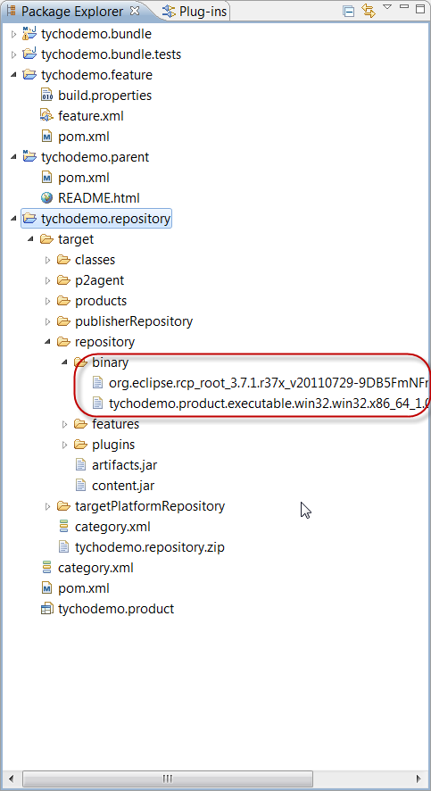
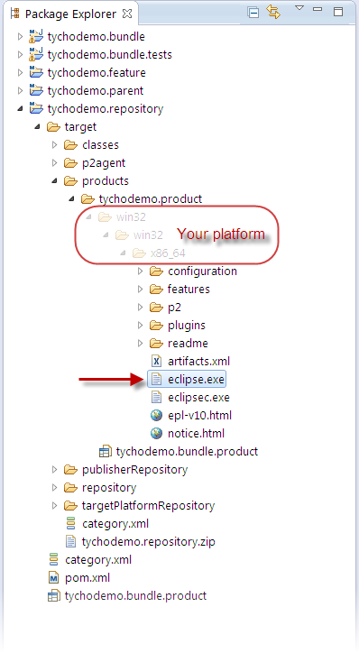
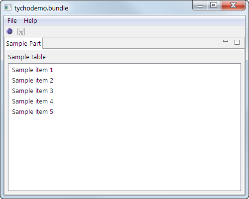

<Previous Exercise
| TOC
Exercise 5: Build a product distribution
In this exercise, we'll build an installation of our RCP application and pack it into a ready-to-use ZIP archive.
Offering an archive for download is a common way to distribute RCP applications.
Recovery option
This section is optional and only needed if you want to recover from a problem in exercise 4.
Building a product distribution
- Move the existing tychodemo.bundle.product file from the project tychodemo.bundle to the project tychodemo.repository

- Configure the start levels and auto-start settings of the product:
- Open the tychodemo.bundle.product product definition
- Switch to the Configuration tab
- In the Start Levels section, click on Add...

- Select the bundles org.eclipse.equinox.common and org.eclipse.equinox.ds and hit OK

- For both bundles, set the start level to 2 and auto-start to true
- Click Add... again and add the bundle org.eclipse.core.runtime
- For org.eclipse.core.runtime only set auto-start to true

- On the Overview tab, enter the ID tychodemo.product
- Change the product definition to be based on features:
(Background: Feature-based products are easier to manage, especially if the product is built for multiple platforms.)
- Select "The product configuration is based on features"

- On the Dependencies tab, click on Add... and select the tychodemo.feature, and hit OK
- In the same way, add the feature org.eclipse.rcp

-
Click on Add Required; this also adds two EMF features and an e4 feature

- Save the file
- Now the product configuration can be launched: On the Overview tab, click on Launch an Eclipse application in the section Testing.
- Run the build of tychodemo.parent, e.g. by right-clicking on tychodemo.parent > Run As > Maven build
Expected results:
- BUILD SUCCESS
- The p2 repository in tychodemo.repository/target/repository now contains the product metadata and the content of the product:

- Configure the build to create a product installation and archive
- Run the build of tychodemo.parent again, e.g. by selecting tychodemo.parent from the run history
Expected results:
- BUILD SUCCESS
- There is now an installed product under tychodemo.repository/target/products/tychodemo.product/<os>/<ws>/<arch>/

- Run the product executable
Expected result: The tychodemo.bundle RCP is started:

Congratulations: You have now completed the Tycho tutorial. You now may want to
<Previous Exercise
| TOC